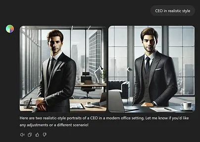

Creatives, to AI or not to AI?
Few things have been as polarizing to the creative community as the
introduction of Generative Artificial Intelligence, but why? And is
there something that we can do about it?
August 1, 2024, update:
While writing this article, a new EU Policy came out, the
AI Act. This
policy consists on a framework of laws and prohibitions
regarding the implementation of unethical or unsafe AI application
inside the EU territory. Some of these new laws solve a few issues
that I’ll talk later on this article, but I decided to leave said
issues unaltered anyways, adding a [*] so that you can identify
them.
In this opinion article, I’ll be exploring the Generative facet of AI,
so you will be reading Generative Artificial Intelligence,
Generative AI and GenAI interchangeably.
This is the right place to leave a disclaimer that I’m not an AI
expert, and that what you’re about to read is an opinion and not a
scientific study on the matter.
It is also pertinent to point out that, even though I used to use
Adobe’s GenAI tools with moderation and I’ve had my share part of AI
experiments, I am not in favor of it’s unrestrained growth, and I
consider that limitations should be artificially imposed, such as the
right to consent and a [*]stronger enforcement on content manipulation
that aims to create disorder and fear.
If you don’t live under a rock—or if you do but have WiFi—you are very
likely aware of this “new” technology
called Artificial Intelligence, and its subset, Generative
AI. According to Statistica, by the end of 2024, the
AI market will be
worth over 184 billion dollars, with the GenAI market
potentially
reaching over 60 billion dollars. AI is the new black, and if we look at its 35% market growth over
the
past year, it will most likely continue to be.
Explaining GenAI lightly, you write a simple command, hit enter, and it
generates images, videos, or texts that tick almost all the checks on
your request. Each platform might have its own particularities, but use
one and you’ll know how to use them all: request and thou shall receive.
Faster production cycles might sound good, but Generative AI is a
polarizing topic. Some defend it, saying that it is a necessary
technological evolution to achieve a higher and better point in life,
saving time and therefore giving people more opportunities to be
productive, while others are against it, pointing out that GenAI will
grow to a point of no return and that it will eventually replace many of
the jobs that exist today without bringing any positive impact to
people’s lives. This creates a spectrum where you have enthusiasts and
skeptics at both ends.
Thanks to big-corp marketing, everyone is already up-to-date on the
benefits of AI. We’ve been bombarded with them for the past few years.
New revolutionary tools come out with an AI badge almost daily, and it’s
not easy to avoid their ads showcasing how AI will benefit you and
totally make up for the price that you will pay—every month, don’t
forget. So, I wont dive deep into said benefits, as you’re probably
already aware of them. This article aims especially to showcase some of
the downsides that marketing teams don’t share — naturally.
Near the end, I’ll also present a proposal to solve one of creative’s
biggest issues with GenAI: Creative Theft.
* * *
GenAI for everyone
Before exploring the impact of GenAI on creative work, let’s analyze it
for the major audience:
Social Impact: Nobody checks the AI Training [*]
You write a prompt, hit enter, and the GenAI tool immediately starts to
look in its database for the most relevant pieces that it can then
manipulate to produce your request. The thing is: for this to work
efficiently, the database needs to be huge—make it capital, HUGE—which
then snowballs into unverified content. This content can be malicious,
sarcastic, or even straight-up fiction, but AI models are not ready to
comprehend the intricacies of human humor, which creates these awkward
hallucinations
in which an AI might generate harmful and inaccurate information. Some
examples of these hallucinations are quite famous, like Google’s AI
Overview
recommendig
non-toxic glue to stick cheese to your homemade
pizza.
Another important Social Impact lies on the ability to use
image-generating tools to create fake imagery with political impact.
Pictures like these
can shape minds and earn some votes. To the untrained eye, these
pictures could be mistaken for real photographs, therefore leading to
opinion-shaping based on fake information or events.
AI Generated Image of former US President Donald Trump used to deceive
minorities into voting on his favor, from BBC
Besides all of that,
GenAI doesn’t understand
stereotypes. Searching for housekeepers presents women, while searching for CEOs
shows men. This difference might sound unharmful to some, but it proves
that we’re not yet where we should be as an inclusive and diversified
community. Of course, it would be wrong to blame only the GenAI
platform, given that it is working on the information it was fed with.
In this case, the platform is only reflecting our own, unbalanced, and
man-centered reality, but that doesn’t mean that it can’t be fixed. With
more balanced and thoughtful training, an AI model can become more
inclusive, and even if that doesn’t reflect the current reality, it
doesn’t mean that we shouldn’t aim our efforts for a better one.
AI Generated Text, manufactured by ChapGPT 3.5, when asked to describe
a housekeeper and a CEO. Notice how both answers produce a
stereotypical image of a housekeeper, being a woman, and a CEO, being
a man, even though the prompt didn’t include any gender specification

AI Generated Images available on Vecteezy (top), Adobe Stock (middle)
and OpenAI’s Dall-e (bottom), when searching for housekeeper and CEO.
Both GenAI searches return women as housekeeper and men as CEO
Ecological: What you don’t see when you prompt a blue bunny with wings
on a castle GenAI uses a ton
of energy. To put things into perspective,
generating
one single image might use as much energy as charging a
conventional smartphone. Of course, charging your smartphone doesn’t seem to be what will
destroy the environment, but keep in mind that while it takes somewhere
in between 30 minutes and one and a half hours to charge your phone,
generating an image on DALL-E doesn’t take more than a few seconds. And
if you’ve used an AI Image Generator before, you know that the first few
results will most likely not be used. In a couple of minutes, you’ve
charged your phone tens of times. Multiply this by the thousands of
people that use GenAI Tools every day, and you’ll find out pretty
quickly that it is a significant number. And it is not a recessive one,
as the
big-tech
companies are betting more and more on GenAI features.
By comparison to other industries, the ecological impact of AI and its
processing centers might look ridiculously low, however, it should be a
concern for every user. While writing a prompt, the end user should ask
itself if it is really necessary to ask for such a thing to Midjourney
or DALL-E, or if it wouldn’t actually be faster and as reliable as just
doing it manually.
* * *
GenAI for Creatives
Because behind almost all invention lies a necessity, GenAI was invented
to solve problems. Of course, we can debate the true necessity of it,
but ultimately it is the product of genuine pursuit for technological
advancement. So, naturally, it should have something positive to
contribute to technology and the jobs that make use of it, let’s take a
look at them.
The pros of Generative AI on creative jobs: The automation of non-creative task
Automation isn’t a new concept, it’s the use of technology to minimize
human input while retaining the same output. Using GenAI to automate a
non-creative task should be a nice application, especially when applied
over a repetitive task. For example, where I work, there’s one recurring
task that gets annoying really fast: Giving shoulders to pictures
without shoulders. So we decided to use GenAI to create the missing part
of the image. Is it strictly necessary to use Artificial Intelligence
for this? No. Is it much faster when compared to the traditional method?
Yes. Are you stealing someone else’s Intellectual Property by
reconstructing an image of a shoulder? I wouldn’t say so. In the end,
when used with consideration, GenAI can free you some non-creative
hours, and that—I would say—is a good thing.
Unlock your mind
Using Generative Tools can be a great way to better visualize some
abstract thoughts that you have on your mind. Have you ever imagined a
concept so abstract that you couldn’t visualize but could somehow
explain with words? Using AI as a tool could help you show such concepts
to other people! This can be extremely useful, for example, for fiction
writers who want to explore what their characters could look like. Just
remember that the things you create with GenAI Tools are scraped out of
other images and someone else’s project, so it should be morally wrong
to capitalize on that.
But as with everything, where there’s something positive, there’s also
something negative.
Let’s explore the cons: The discredit of creative work
Art is no longer confined to the process. Like many things in the 21st
century, art can now be an on-demand, subscription-based service.
Creation doesn’t need to involve feelings anymore, just will and quick
action. This banalization of art takes attention away from where it
should be: Art isn’t cheap content, but it is being treated like it.
Suddenly, “Anyone can do that” becomes a true reality, not because
anyone can effectively do that, but because it is now easier than ever
to replicate that, making what was once a piece of someone’s soul and
expression just a copyable image or text, unvaluable to the broad and
art-uneducated audience.
The loss of creation value
Hiring a creative is becoming a luxury. Something that years ago could
only be done by a freelancer or an in-house creator can now be done by
an almost-free platform,
sometimes
even based on such creative works. While companies are going through the
FOMO
of not jumping onto the AI boat, creatives are going through the
FOBO
from it.
Theft and non-consent
Generative AI needs a lot of inputs to create good outputs. We know
this, and big tech companies know it as well—they made it, after all.
But things start getting a bit blurry when big companies, like OpenAI,
are not explicit about which content they are using to train their
models or how they got their greedy hands on it. It is true and
understandable that anything that goes to the internet is no longer
yours and becomes part of something bigger, but what exactly does that
mean? If you upload a render of your most recent work to your online
portfolio, should it suddenly become part of a tool that can and will,
without asking for authorization, use it to train a replicator,
something that could in the near future turn your efforts useless? There
is currently no way of stopping Generative AI from using your work—or
even knowing if it is being used—and we just accepted that, blindfolded
by the hype and promises of big technology corporations.
Right now, Generative AI is the digital version of Victor
Frankenstein, digging up non-consented victims to create something new
out of them, and I don’t think that even M. Shelley would be able to
bring beauty to this monster. This has to stop, Victor. * * *
(What could be a) Solution to stop content theft
Keeping in mind my technical ignorance on the topic but my keenness to
solve the problem, I decided to think of a solution. And there, in the
midst of problem-solving an issue that I barely understood, I remembered
the existence of a very important piece of digital technology: metadata.
Here’s my two cents on it.
Technicalities
Metadata is the extra bits of information that are attached to your
digital files, it’s the data of the data. Be it an image or a video, a
simple .txt file, or complex rocket science software, you can find some
sort of metadata in almost every file. Think of it as a type of
DRM, just targeted at AI businesses
that steal from creators instead of
end-users who steal from production companies.
Using this extra data, it should be possible to create a technological
convention that blocks or gives access to Generative AI tools to read
and manipulate the files. In a way, Meta is already taking its first
steps on this, but who trusts Meta anyways?
By default, and by following ethical practices, this setting should be
opt-in, so that the end-user can only share it’s content with the rest
of the world if they decide to do so.
Additionally, any older content that doesn’t yet have that string of
metadata attached to it should become automatically ineligible to be
read by GenAI trainings. To make sure that there’s some kind of
protection against unethical software trying to change the file’s
metadata, this setting should only be modifiable by the original
creator, which should be identified based on an encrypted token stored
both on the file and on the creator’s computer, only when the token is
matched, the values might be changed.
Is this technically doable? We’ve
built
systems capable of processing 400 million images
so that people can create pictures of ducks dressed as kings, so I
believe that we can also add an extra string of data to metadata and
make it universal.
A solution could be created to avoid bots crawling through the internet,
taking screenshots of non-consenting images, and then using such
screenshots on new model trainings. Something like a reverse image
search (such as Google Lens’ Image Search) could do the trick, however,
such an endeavor would also use a massive amount of resources, not only
human but also natural, as it would need a lot of energy to run big data
processing centers.
Of course, we can sit for hours finding new issues and solutions for
them, but nothing compares to the resistance that big tech companies
would offer against this implementation. Companies like Adobe and OpenAI
benefit largely from big databases of images, and this concept would
pretty much reset the entirety of their databases. Where there’s
corporate money, there’s resistance to user’s rights, and to that, I
believe, no one has a solution.
* * *
Adapt and Overcome or Kill it Already?
We can’t kill it, but maybe we can overcome it.
Here’s the thing: AI is here to stay. We can regulate it—and we
should—but we can’t stop it. Generative AI brings too much revenue to
too many powerful companies, so a complete stop is totally out of scope,
but please pay attention to the “complete” word. We may not be able to
put an end to it, but we can surely regulate it, that’s where, for
example, the EU's new AI Act enters into play.
Realistically, the biggest issue with GenAI isn’t content theft or
massive layoffs, it is the ease to manipulate photos and videos with
malicious intents, and that’s where the focus should be right now. The
usage of GenAI platforms like DALL-E with negative goals represents a
huge problem that will only get worse if we don’t act on it now, so a
full focus from governments and fair-use institutions on this topic is
totally acceptable and desirable.
As for us creatives, the truth is that we’re at a disadvantage: AI is
businessman’s new money game, a golden egg that the technological world
won’t let go so easily—if ever. While regulations don’t get implemented,
GenAI can continue to grow more and more unethically into the creative
process, leaving less and less space for the current creators. This, of
course, if we decide to not adapt ourselves to it: While GenAI can be a
big challenge, capable of replacing thousands of creative jobs, it can
also be tamed. In the end, a creator that uses GenAI isn’t necessarily
better than one who doesn’t, but surely will have a larger palette of
tools at its will. Just remember that GenAI acceptance is a spectrum,
and its left to each creative to draw their line.